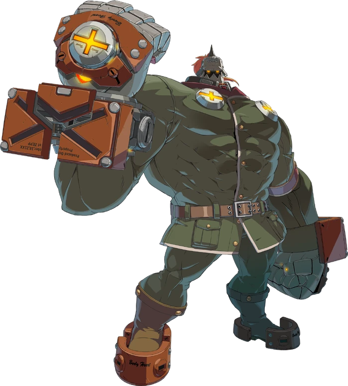

Potemkin
A giant walking fortress who can turn the match around with his powerful grabs.
He is a soldier from the Independent Airborne State of Zepp.
He's a proud man with a loyal heart.
His stature makes him come off as intimidating, but he's a gentle man who loves nature.
He values duty above all, and while he can tolerate his own pain, he cannot bear to see others hurt. He faces adversity head-on.
He refuses to be used as a tool to hurt others for evil.
